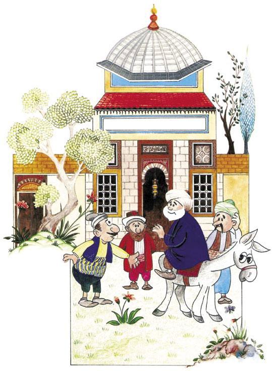
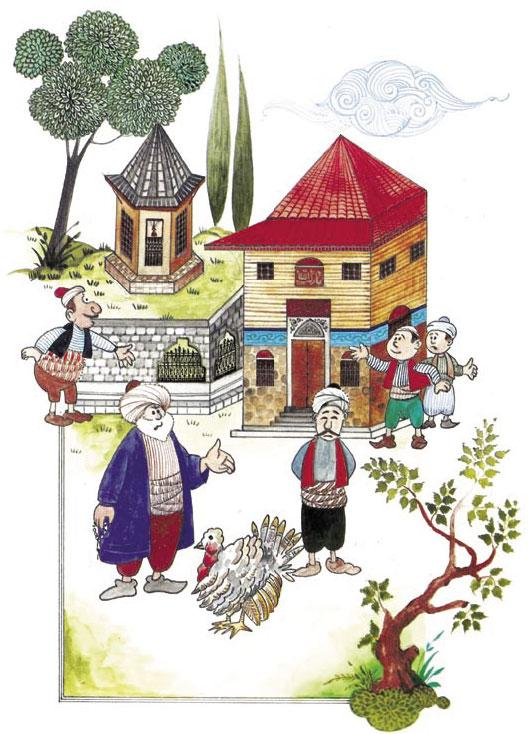
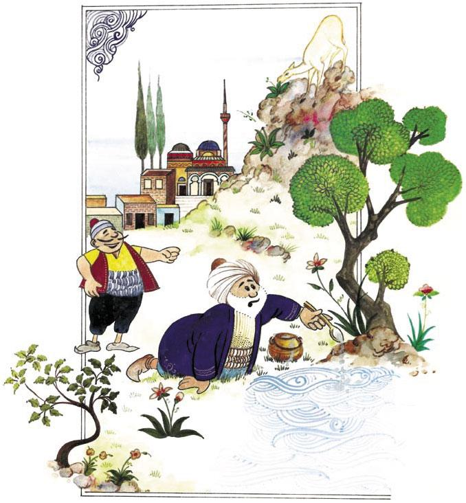

Adam Olmanın Yötemi Nedir
Günün birinde Hoca'nın da içinde bulunduğu topluluktan birisi;
“Hocam, adam olmanın yöntemi nedir?” deyince; Hoca Efendi, adamın nefes almasına bile fırsat vermeden;
“Canım, bunu bilmeyecek ne var, elbette kulaktır.” der.
Fakat Hoca, arkadaşlarının "kulaktır" cevabından pek bir şey anlamadıklarını anlayınca açıklama yapma gereğini duyar:
Aa!. . Bunu bilemeyecek ne var? Herhangi bir adam konuşurken onu can kulağı ile dinlemeli; bu arada kendi ağzından çıkanı kendi kulağı duymalıdır.
Allah’ın Rahmetinden Kaçılmaz
Günün birinde bardaktan boşanırcasına yağmur yağmaktadır. Elbette yağmur yağdığı vakit ya koşulur, ya da bir yerlere sığınılır. Nasreddin Hoca da yağmurun yağışını ve sokakların yalnızlığını pencereden seyrederken bir de bakar ki yağmurdan kaçan bir adam… Hoca biraz dikkatli baktığında bunun bir komşusu olduğunu anlar ve pencereyi açarak;
“Komşu, komşu, utanmıyor musun, niçin Allah’ın rahmetinden kaçıyorsun?” deyince adam koşmayı bırakır ve yavaş yavaş evine doğru gider. Bu arada adamın da ıslanmadık yeri kalmaz.
Ertesi gün hava yine yağmurludur. Bu defa Hoca Efendi alışveriş için sokağa çıkmıştır. O, işini bitirip de hızlı adımlarla evine doğru giderken bir gün önceki komşusunun evinin önünden geçer. Bu sefer komşusu;
“Hoca Efendi, Hoca Efendi, sen dün bana ‘Allah’ın rahmetinden kaçılmaz. ’ demiştin; bak şimdi kendin kaçıyorsun.” deyince, Hoca komşusuna doğru döner ve;
“Be adam! Ben Allah’ın rahmetinden kaçmıyorum, Allah’ın rahmetini çiğnememek için koşuyorum.” der.
Altın Olsa Ne, Taş Olsa Ne
Bir yolculuk sırasında Nasreddin Hoca’nın yolu bir ile düşer. Hoca orada bazı garipliklerle karşılaşır. Bunlardan biri de bazı evlerin üzerine bayrak dikilmesidir. Hoca sözü bir punduna getirerek sorar:
““Yahu, bazı evlerin üzerinde bayrak asılı, bunun sebebi nedir?” deyince hep bir ağızdan;
““Hocam, o bayrak asılı evlerde küp dolusu altın vardır.” derler.
“Bayrak dikmenin sebebini öğrenen Nasreddin Hoca, günün birinde çarşıdan kocaman bir küp alarak kalmakta olduğu eve gelir. Sonra da küpün içerisini çakıl taşlarıyla doldurur. Yine âdetmiş, evinde altın olanlar, küplere karşı sohbet ederlermiş. Sıra Nasreddin Hoca’ya gelince bakmışlar ki küpün içerisinde altın yerine çakıl taşları dolu… Misafirlerden birisi;
““Hoca Efendi, bu nasıl iş, senin küpünde altın yerine çakıl taşları dolu.” deyince Hoca;
““Yahu komşular neye üzülüyorsunuz, küpte yattıktan sonra altın olsa ne, taş olsa ne? Fark eden ne ki?” der.
